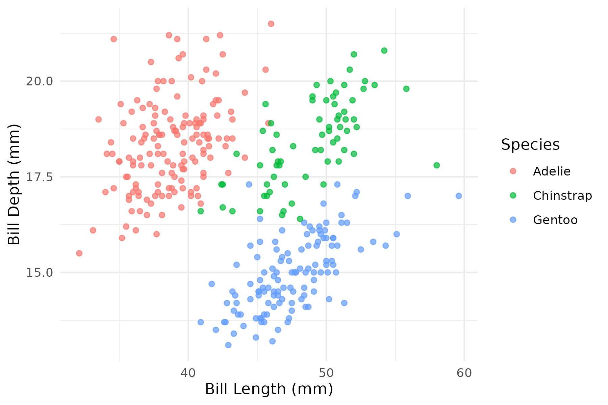
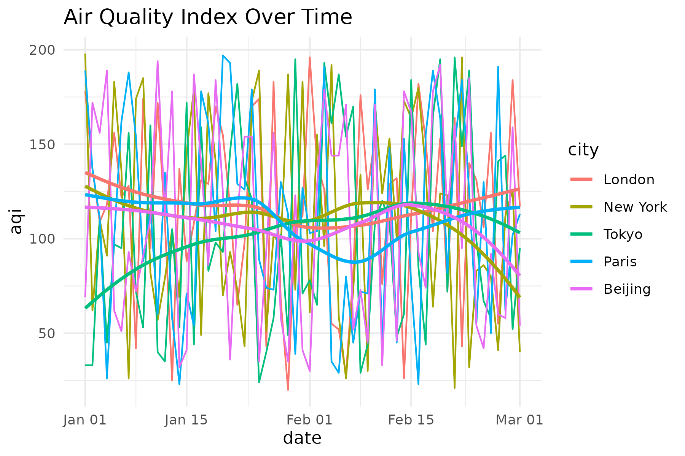
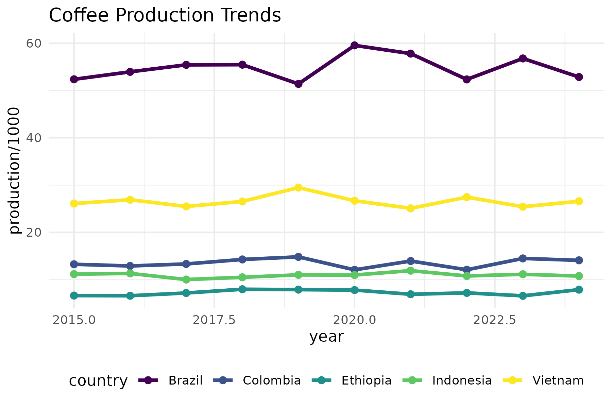

Tidy Tuesdays
Weekly Data Visualization Challenges
Exploring Data through R
A collection of weekly data visualization challenges
About Tidy Tuesdays
Tidy Tuesday is a weekly data project in R organized by the R for Data Science online community. Each week, a new dataset is posted alongside a chart or article related to that dataset, and participants explore the data and create visualizations.
This site showcases my journey through these weekly challenges, demonstrating various techniques in data wrangling, visualization, and analysis using R.
Recent Challenges
Week 1: Palmer Penguins
 Exploring relationships between bill length, bill depth, and species in the Palmer Penguins dataset.
Week 2: Global Air Quality
 Analyzing air quality measurements across major global cities.
Week 3: Global Coffee Production
 Exploring trends in coffee production, exports, and consumption.
Getting Started with Tidy Tuesday
Interested in participating in Tidy Tuesday yourself? Here’s how to get started:
- Fork the TidyTuesday GitHub repository
- Check the repository for the latest dataset each Tuesday
- Analyze the data and create visualizations using R
- Share your work using the #TidyTuesday hashtag on social media
Tools and Techniques
Throughout these challenges, I use a variety of R packages and techniques:
- tidyverse - For data manipulation and transformation
- ggplot2 - For static visualizations
- shiny - For interactive applications
- plotly - For interactive plots
- sf & tmap - For spatial data and mapping
- text mining - For analyzing textual data
- machine learning - For predictive modeling
Each week’s challenge explores different aspects of data science, from exploratory data analysis to advanced visualization techniques.